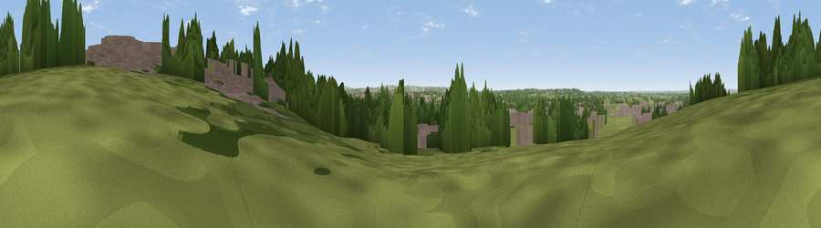

Viewpoint near Blunsdon St Andrew
#31605 in England · top 50% of its area beats it · near Blunsdon St AndrewWhere it is
The exact computed spot (SU 13308 89754). Click the marker for map links.
The view, rendered

A 360° render of this exact spot computed from the terrain model, tree cover and land cover — summer colours, afternoon light, calibrated against photographs of famous viewpoints. Real trees, hedges and buildings will differ in detail.
The panorama
Grey silhouette: terrain skyline in each direction (720 bearings, Earth curvature and refraction included). Dashed green: skyline with trees (+15 m) and buildings (+8 m) as obstacles. Blue strip: how far the ground is visible on each bearing.
Where the view opens
Wedge length = distance to the farthest visible ground on that bearing (vegetation-aware). Rings at 10, 25 and 50 km.
What fills the view
41% built-up · 31% woodland · 25% grassland · 2% cropland
Angular shares of the visible panorama (visual magnitude), not map area. Landscape diversity 0.51 (0–1 Shannon).
Key numbers
More beautiful places nearby
The staircase of upgrades: each row has a higher view potential than everything closer. Driving times are estimates from straight-line distance, calibrated against real road routing — check an actual route before setting out.
| Place | Direction | Drive | Score |
|---|---|---|---|
| Viewpoint near Broad Blunsdon | ENE · 3 km | ~7 min | 53.6 |
| Viewpoint near Chiseldon | SSE · 9 km | ~18 min | 55.9 |
| Viewpoint near Wroughton | SSE · 10 km | ~19 min | 61.4 |
| Viewpoint near Broad Town | SSW · 11 km | ~21 min | 65.8 |
| Viewpoint near Broad Town | SSW · 12 km | ~22 min | 66.9 |
| Viewpoint near Liddington | SE · 13 km | ~23 min | 73.4 |
| Viewpoint near Liddington | SE · 13 km | ~23 min | 74.4 |
| Viewpoint near Woolstone | ESE · 17 km | ~30 min | 76.7 |
51.60647, -1.80923 · source: osm viewpoint · position refined by local search. Computed location — check access rights before visiting.